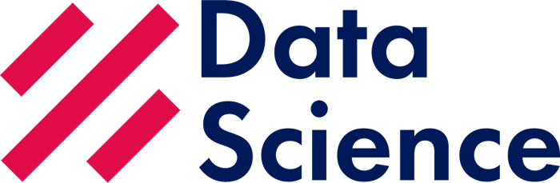

Sesión 06 · Módulo 4 · 3 horas
El bronce ya es confiable; hoy se convierte en plata
Consolidación, calidad y Databricks SQL · P.E. Data Engineer · Azure
Al cerrar vas a poder hacer cinco cosas
- Elegir el grano de una tabla plata y justificarlo.
- Unir cinco tablas bronce sin duplicar filas.
- Verificar nulos, duplicados y huérfanos antes de publicar.
- Responder preguntas de negocio con Databricks SQL.
- Programar la consolidación como job y leer su historial y linaje.
De S05 a S06: el bronce se une, se limpia y se consulta★
| Pieza | En S05 | En S06 |
|---|---|---|
| Datos | Cinco tablas Delta crudas | Una tabla consolidada en plata |
| Grano | Una tabla por entidad | Una fila por línea de pedido |
| Calidad | Conteos por tabla | Nulos, duplicados, huérfanos y totales |
| Consulta | SELECT sobre bronce | Preguntas de negocio en Databricks SQL |
| Operación | Carga manual | Job programado con historial y linaje |
S06 no vuelve a cargar el CSV: lee las tablas Delta que dejó S05.
Cada capa responde una pregunta distinta★
| Capa | Pregunta que responde | En Andina |
|---|---|---|
| Bronce | ¿Qué llegó y sin transformar? | Los cinco CSV en Delta |
| Plata | ¿Qué pasó, limpio y unido? | pedidos_detalle: una fila por línea |
| Oro | ¿Qué decisión tomo con eso? | Agregados y dashboards (S07+) |
Si una consulta de negocio necesita unir cinco tablas cada vez, la capa plata no está haciendo su trabajo.
El grano se decide antes de escribir la consulta★
| Grano posible | Filas para un pedido con 3 productos | Sirve para |
|---|---|---|
| Por pedido | 1 | Contar pedidos y estados |
| Por línea de pedido | 3 | Analizar producto, cantidad y categoría |
| Por pago | 1 o más | Conciliar cobros |
| Por cliente y mes | 1 | Retención y cohortes |
En este curso la plata usa grano **por línea de pedido**: conserva producto y cantidad, y permite sumar importes sin perder detalle.
El bronce está listo y tiene cinco tablas★
pede.bronze: cinco tablas externas Delta, producto de la carga de S05.La plata no crea datos nuevos: recombina estos cinco y agrega reglas de calidad.
Cada join aporta una pieza y tiene una clave★
| Tabla | Clave | Qué aporta |
|---|---|---|
orders | order_id | Fecha, canal y estado |
order_items | order_id + product_id | Producto, cantidad y precio |
products | product_id | Nombre y categoría |
customers | customer_id | Cliente y ciudad |
payments | order_id | Método, fecha y monto pagado |
Una consulta crea la tabla plata sin volver al CSV★
CREATE OR REPLACE TABLE pede.silver.pedidos_detalle
USING DELTA
LOCATION 'abfss://silver@stpededemobrs001.dfs.core.windows.net/delta/pedidos_detalle'
AS
SELECT
o.order_id, o.order_date,
o.channel AS canal, o.status AS estado,
c.customer_id, c.full_name AS cliente, c.city AS ciudad,
p.product_id, p.name AS producto, p.category AS categoria,
oi.quantity AS cantidad, oi.unit_price AS precio_unitario,
ROUND(oi.quantity * oi.unit_price, 2) AS importe_linea,
pay.method AS metodo_pago, pay.paid_at AS pagado_en,
pay.amount AS importe_pago, o._load_date
FROM pede.bronze.orders o
JOIN pede.bronze.order_items oi ON o.order_id = oi.order_id
JOIN pede.bronze.products p ON oi.product_id = p.product_id
JOIN pede.bronze.customers c ON o.customer_id = c.customer_id
LEFT JOIN pede.bronze.payments pay ON o.order_id = pay.order_id;LEFT JOINcon pagos conserva el pedido cancelado.importe_linease calcula una vez, no en cada consulta.- Los archivos quedan en
silver/delta/pedidos_detalle.
La tabla plata queda en el catálogo, no en el notebook★
pede.silver.pedidos_detalle: 17 columnas, grano por línea de pedido.El nombre de la tabla es el contrato: si cambia el grano, cambia el nombre o se versiona.
Los datos se leen como una sola tabla de negocio★
La vista previa es la prueba rápida de que el join no duplicó ni perdió filas.
Los números de la plata deben cuadrar con el bronce★
| Métrica | Valor | De dónde sale |
|---|---|---|
| Filas de la tabla | 15 | 15 líneas de pedido |
| Pedidos distintos | 10 | 10 pedidos |
| Ingresos por líneas | 13.407,50 | Suma de importe_linea |
| Total pagado | 13.158,50 | Suma de pagos |
| Pedido cancelado | 249,00 | Una línea sin pago |
| Web pagado | 10.404,50 | 6 pedidos |
| Tienda pagado | 2.754,00 | 3 pedidos |
Ejercicio · Calcula el grano antes de escribir SQL★
| Pedido | Productos | Filas en plata | Filas si el grano fuera por pedido |
|---|---|---|---|
| P-1001 | 2 | 2 | 1 |
| P-1002 | 1 | 1 | 1 |
| P-1003 | 3 | 3 | 1 |
| P-1004 | 4 | 4 | 1 |
Ejemplo resuelto: con 10 pedidos y 15 líneas, la tabla por pedido tendría 10 filas; por línea tiene 15. El grano cambia la respuesta, no solo el tamaño.
Antes de publicar, cuatro controles de calidad★
| Control | Pregunta | Qué hacer si falla |
|---|---|---|
| Nulos en claves | ¿Hay order_id o product_id nulos? | Detener la carga y revisar el origen |
| Duplicados | ¿Hay más filas que líneas de pedido? | Revisar el join y las claves |
| Huérfanos | ¿Hay líneas sin pedido o sin producto? | Reportar y excluir con criterio |
| Totales | ¿Cuadra con el bronce? | Comparar por canal y por fecha |
Un control que no detiene el pipeline es un comentario, no un control.
Tres consultas que deben devolver cero★
-- 1. Claves nulas
SELECT COUNT(*) AS nulos
FROM pede.silver.pedidos_detalle
WHERE order_id IS NULL OR product_id IS NULL;
-- 2. Duplicados por grano
SELECT COUNT(*) AS duplicados
FROM (
SELECT order_id, product_id, COUNT(*) AS n
FROM pede.silver.pedidos_detalle
GROUP BY order_id, product_id
HAVING n > 1
);
-- 3. Totales contra el bronce
SELECT
(SELECT SUM(importe_linea) FROM pede.silver.pedidos_detalle) AS ingresos_plata,
(SELECT SUM(quantity * unit_price) FROM pede.bronze.order_items) AS ingresos_bronce;- Las dos primeras devuelven 0.
- La tercera debe dar el mismo número en ambas columnas: 13.407,50.
Ejercicio · Encuentra el huérfano★
| Síntoma | Causa | Consulta que lo confirma |
|---|---|---|
| 15 líneas en bronce, 14 en plata | Un product_id no existe en productos | LEFT ANTI JOIN contra products |
| 16 filas en plata | Un pedido tiene dos pagos | Contar por order_id en payments |
| Total pagado mayor | Se sumó importe_pago por línea | Sumar pagos desde payments |
| Cliente vacío | customer_id nulo en orders | WHERE customer_id IS NULL |
Ejemplo resuelto: SELECT * FROM order_items oi LEFT ANTI JOIN products p ON oi.product_id = p.product_id devuelve 0 en Andina; si devuelve algo, el join INNER lo habría escondido.
Databricks SQL: la misma tabla para el analista y el ingeniero★
| Pieza | Qué resuelve | En el curso |
|---|---|---|
| SQL warehouse | Cómputo siempre disponible para SQL | Serverless Starter Warehouse |
| Query | Consulta guardada y compartible | Consultas de validación y negocio |
| Dashboard | Visualización para el negocio | Opcional en S07 |
| Alert | Aviso cuando un número se sale del rango | Idea para producción |
El warehouse no reemplaza al clúster: lo complementa para consultas y BI.
La historia de consultas es la auditoría del analista★
El historial incluye las consultas de la API y del job: sirve para reconstruir un número sin preguntar por chat.
Tres preguntas de negocio, tres consultas★
-- 1. Ingresos y pedidos por canal
SELECT canal, estado,
COUNT(DISTINCT order_id) AS pedidos,
ROUND(SUM(importe_linea), 2) AS ingresos
FROM pede.silver.pedidos_detalle
GROUP BY canal, estado
ORDER BY canal;
-- 2. Ingresos por categoría
SELECT categoria,
COUNT(*) AS lineas,
ROUND(SUM(importe_linea), 2) AS ingresos
FROM pede.silver.pedidos_detalle
GROUP BY categoria
ORDER BY ingresos DESC;
-- 3. Productos más vendidos por unidades
SELECT producto, SUM(cantidad) AS unidades
FROM pede.silver.pedidos_detalle
GROUP BY producto
ORDER BY unidades DESC
LIMIT 3;- Las tres leen la misma tabla: no vuelven al bronce.
- El
COUNT(DISTINCT order_id)evita contar líneas como pedidos.
Los resultados cuentan una historia, no solo números★
| Pregunta | Resultado | Lectura |
|---|---|---|
| Canal web pagado | 6 pedidos · 10.404,50 | El canal principal |
| Canal tienda pagado | 3 pedidos · 2.754,00 | Ticket promedio más alto |
| Web cancelado | 1 pedido · 249,00 | No se cobró; explica la diferencia |
| Tecnología | 11.495,00 | 85,7 % de los ingresos |
| Accesorios | 1.912,50 | Volumen alto, ticket bajo |
El ticket promedio de tienda es 918,00 y el de web 1.734,08: el canal no solo cambia el volumen.
Ejercicio · Reconcilia lo facturado con lo cobrado★
| Concepto | Valor | Explicación |
|---|---|---|
| Ingresos por líneas | 13.407,50 | Suma de importe_linea |
| Pagos registrados | 13.158,50 | Suma de importe_pago |
| Diferencia | 249,00 | Pedido web cancelado |
Si usaras INNER JOIN con pagos | 13.158,50 en ambas | La diferencia desaparece: error |
Ejemplo resuelto: la diferencia es información, no un descuadre. El LEFT JOIN es lo que la hace visible.
Un job convierte una consulta en un proceso★
| Sin job | Con job |
|---|---|
| Alguien corre la consulta a mano | Se ejecuta a una hora fija |
| Si falla, nadie se entera | Reintentos y alertas |
| No hay historial confiable | Run history con estado y duración |
| Depende de una persona | Depende de una definición versionada |
El job no hace que la consulta sea correcta: hace que su ejecución sea observable y repetible.
El job corrió en diez segundos y dejó su historial★
job-pede-s06-plata: tarea SQL sobre el warehouse serverless; estado Succeeded y 10 s de duración.La tarea es SQL, no un notebook: usa el mismo warehouse que las consultas y no necesita un clúster.
La definición del job es corta y versionable★
{
"name": "job-pede-s06-plata",
"tasks": [{
"task_key": "bronce_a_plata",
"sql_task": {
"warehouse_id": "bdfb9815b6b363ce",
"file": {
"path": "/Users/.../pede/S06/02_silver",
"source": "WORKSPACE"
}
}
}],
"schedule": {
"quartz_cron_expression": "0 0 3 * * ?",
"timezone_id": "America/Lima",
"pause_status": "PAUSED"
}
}- La tarea apunta a un archivo, no a una consulta copiada.
- La programación está en la definición, no en la cabeza de alguien.
PAUSEDhasta que el equipo apruebe la tabla.
Programar es decidir frecuencia, zona y reintentos★
| Decisión | Pregunta | Valor del curso |
|---|---|---|
| Frecuencia | ¿Cada cuánto cambia el dato? | Diaria a las 03:00 |
| Zona horaria | ¿En qué hora lee el negocio? | America/Lima |
| Reintentos | ¿Cuántas veces antes de alertar? | 2 con espera |
| Timeout | ¿Cuánto es demasiado? | 30 minutos |
| Alertas | ¿Quién se entera si falla? | Canal de datos |
Ejercicio · Diseña el schedule para tres fuentes★
| Fuente | Frecuencia | Justificación |
|---|---|---|
| CSV de pedidos exportado a las 02:00 | 03:00 diaria | Deja una hora de margen |
| Catálogo de productos, cambia poco | Diaria o semanal | No necesita tiempo real |
| Pagos con correcciones del banco | Diaria + reejecución | El banco puede ajustar después |
Ejemplo resuelto: nunca programes a la misma hora que la fuente; deja margen y verifica el archivo de origen.
El linaje muestra qué alimenta la tabla y qué la rompe★
job-pede-s06-plata como upstream de la plata.El linaje se construye solo si las lecturas y escrituras pasan por el catálogo. Un spark.read con ruta y clave no lo registra.
Laboratorio: bronce a plata en 40 minutos
- Verificar que las cinco tablas bronce existen y tienen los conteos de S05.
- Escribir la consulta de consolidación con el grano por línea.
- Crear
pede.silver.pedidos_detallecomo tabla Delta externa. - Ejecutar los tres controles de calidad.
- Responder las tres preguntas de negocio.
- Programar el job en modo pausado y revisar su historial.
La evidencia de S06 son números que cuadran★
| Paso | Acción | Verificación |
|---|---|---|
| 1 | Crear la tabla plata | 15 filas y 10 pedidos distintos |
| 2 | Controlar claves y duplicados | 0 nulos y 0 duplicados |
| 3 | Comparar totales con bronce | 13.407,50 en ambos lados |
| 4 | Responder por canal | Web 10.404,50 · tienda 2.754,00 · cancelado 249,00 |
| 5 | Ejecutar el job | Run Succeeded con historial |
Plan B sin permisos: el instructor publica la tabla plata y el alumno repite consultas y validaciones en modo lectura.
Errores frecuentes al consolidar★
| Síntoma | Causa | Qué hacer |
|---|---|---|
| Más de 15 filas | Join duplicado por pagos o claves | Revisar grano y contar por clave |
| Menos de 15 filas | INNER JOIN con una tabla incompleta | Usar LEFT y revisar huérfanos |
| Total pagado inflado | Se sumó importe_pago por línea | Sumar pagos desde su tabla |
| Tabla sin datos | El job apunta a otra ruta o catálogo | Revisar LOCATION y el archivo SQL |
| Linaje vacío | Lectura por ruta sin catálogo | Leer tablas de UC, no rutas con clave |
Cinco preguntas de salida
¿Qué es el grano de una tabla?
Lo que representa una fila. En pedidos_detalle, una línea de pedido.
¿Por qué el join de pagos es LEFT?
Para conservar el pedido cancelado y hacer visible la diferencia de 249.
¿Qué control implementarías primero?
La comparación de totales contra el bronce: detecta joins y filtros mal puestos.
¿Qué aporta un job si la consulta ya funciona?
Ejecución programada, reintentos, alertas e historial observable.
¿Para qué sirve el linaje?
Para saber qué tablas y jobs dependen de un dato antes de cambiarlo.
Fuentes para profundizar
- Microsoft Learn · Medallion architecture — https://learn.microsoft.com/azure/databricks/lakehouse/medallion
- Microsoft Learn · Delta Lake — https://learn.microsoft.com/azure/databricks/delta/
- Microsoft Learn · Databricks SQL — https://learn.microsoft.com/azure/databricks/sql/
- Microsoft Learn · SQL warehouse — https://learn.microsoft.com/azure/databricks/compute/sql-warehouse/
- Microsoft Learn · Jobs y orquestación — https://learn.microsoft.com/azure/databricks/jobs/
- Microsoft Learn · Tareas SQL en jobs — https://learn.microsoft.com/azure/databricks/jobs/sql
- Microsoft Learn · Linaje en Unity Catalog — https://learn.microsoft.com/azure/databricks/data-governance/unity-catalog/data-lineage
- Microsoft Learn · Calidad de datos — https://learn.microsoft.com/azure/databricks/tables/constraints
- Microsoft Learn · Consultas en Databricks SQL — https://learn.microsoft.com/azure/databricks/sql/user/queries/
- Microsoft Learn · Alertas y dashboards — https://learn.microsoft.com/azure/databricks/sql/user/alerts/